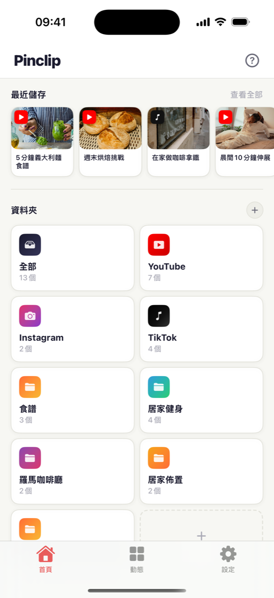
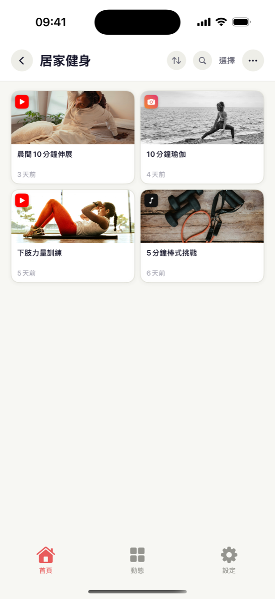
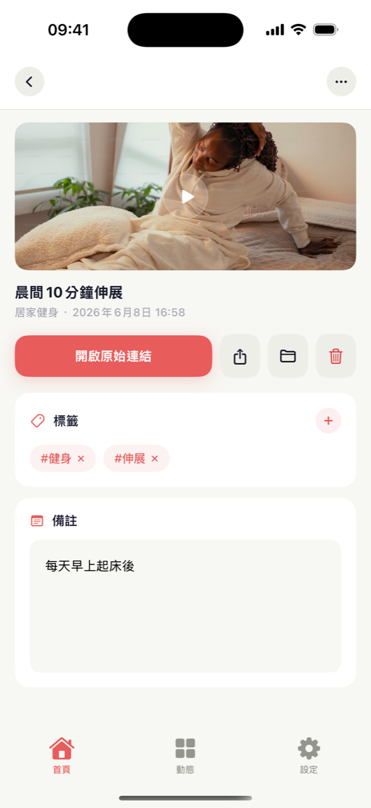
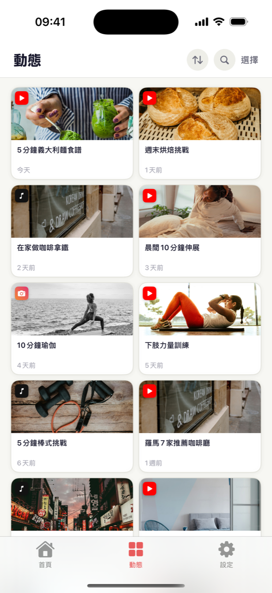

滑 Shorts 或 Reels 時想著「之後再看」的影片，真要找的時候就不見了。Pinclip 就是放這些影片的收藏箱。在影片上點分享按鈕，選 Pinclip，就這麼簡單 — 標題和預覽圖自動加上，所有影片整整齊齊地放進資料夾。

在 YouTube、Instagram 或 TikTok 看到喜歡的影片，點下面的分享（箭頭）按鈕，選 Pinclip。完全不用離開正在看的 App。
它會自動抓取影片的標題和預覽圖。你什麼都不用打字，收藏箱看起來就像相簿一樣，一眼就能認出來。
建幾個像「做菜」「健身」這樣的資料夾，把影片放進去。再加上標籤和備註，連當初為什麼收藏都不會忘。
「上週看的那支義大利麵影片……」標題和頻道都想不起來，太常見了。在 Pinclip 裡，打開資料夾或點一下標籤就出來了。像這樣：
不管影片來自哪個 App，儲存方法都一樣。YouTube 和 TikTok 的影片連標題和預覽圖都自動填好，所有收藏都能在同一個收藏箱裡搜尋。
辛苦整理的「羅馬咖啡廳」資料夾，只有自己看太可惜了。把資料夾變成連結送出去，朋友不用裝 App，在瀏覽器裡就能直接看。如果朋友也在用 Pinclip，還能把整個資料夾匯入自己的收藏箱。



不用關掉 YouTube、Instagram 或 TikTok。分享按鈕 → Pinclip，點兩下就回去繼續看。
把常看的資料夾或影片放到手機主畫面上。解鎖後點一下，影片就開始播了。
用 Pro 的話，iPhone 上存的影片也會出現在 iPad 上。透過你自己的 iCloud 同步，更安心。
點一下儲存的影片，就會直接打開 YouTube、Instagram 或 TikTok 上的原影片。再看一遍只要一下。
來自 YouTube 的、來自 TikTok 的，Pinclip 自動幫你分好類。什麼都不用做，就依平台整理好了。
給影片加上 #做菜 這樣的標籤，寫一句為什麼收藏。之後點一下標籤，相關影片全都出來。